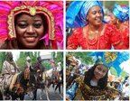
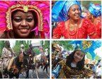
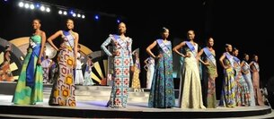
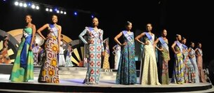

Carnival Updatez
BAND INFORMATION
 

 


Calabar Carnival has five major competing bands that are each comprised of about 10,000 participants. Each band can be distinguished by different
names and colors. Each band has up to five kings and queens that are dressed in large scale costumes which interpret that year’s theme and set the tone
for the rest of the band’s outfits.
Bayside Band(Blue)
Bayside Band is led by the creator of Calabar Carnival and the former governor Donald Duke. It is known by its distinctive aqua marine colour
and allows anyone to join the band, even foreigners.
Freedom Band (Yellow)
The Band of Freedom is defined by the colour yellow. This band has always been ranked in the top three bands ever since the carnival first began!.
Seagull Band (Red)
Seagull Band is recognized by its distinctive red colour. It has been described as being the most stylish and co-ordinated band. The band is also known
for its patriotism and everything about the Band relates to Nigerian carnival costumes, Calabar costumes and Calabar dances. They are fiercely proud
to show off their roots
Passion 4 Band (Green)
Passion 4 Band is known as the Green Band and is actually the most successful band of all time! It has won the competition more than any other band.
The band is often regarded as being the most outstanding of them all. The band is also the only band that has two sections – one for children and
another for adults.
Masta Blasta Band (Orange)
Masta Blasta Band is known as being the orange family! They self-proclaim to be the most entertaining band and they know about the importance of
Calabar Carnival Masta Blasta is the largest of all bands with well over ten thousands members from all corners of the world. They are famous for their
inclusivity!.
AWARDS
The Carnival Parade terminates at the UJ Esuene Stadium and is followed by the award ceremony for the ‘Band of the Year’. Expert judges hand out
various awards for best costumes, music, floats, choreography and of course the most prestigious award for the “Band of the Year”. Around 15,000 spectators fill up the stadium, another 10,000
spectators surround the stadium and the event is broadcast to a television audience of over 50 million
people! So as you can imagine, that winning the title of best band doesn’t just get you a nice cash prize but also nation-wide fame!.